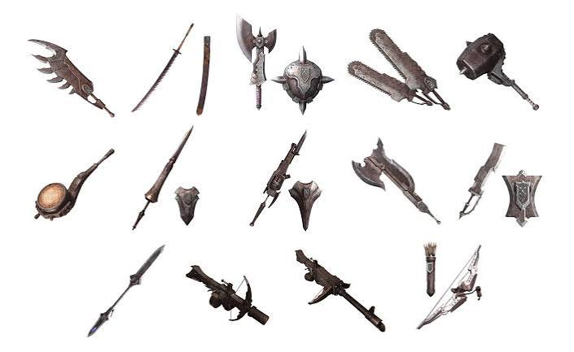
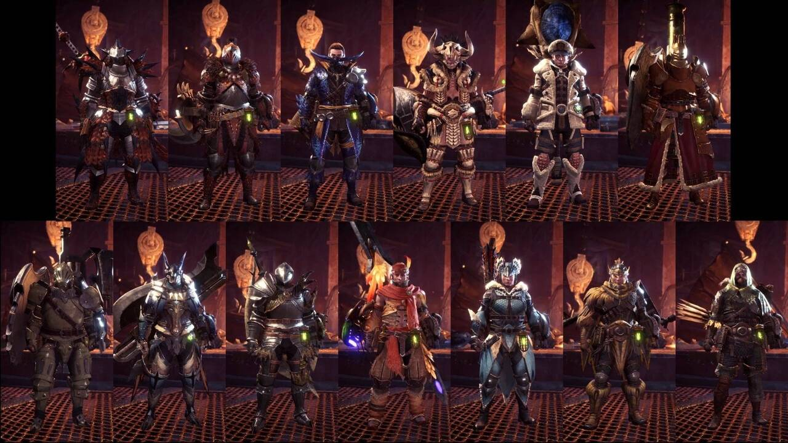
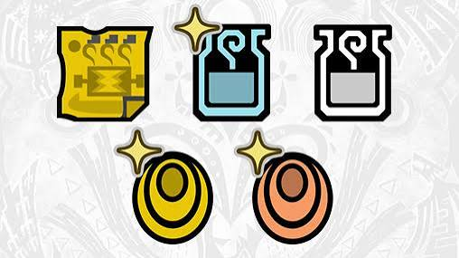

Armas y equipo 14 armas
El juego ofrece 14 diferentes tipos de armas, desde la Gran Espada, la cual es lenta pero potente, hasta armas mas rápidas como las Espadas Dobles.
Cada arma cambia por completo el estilo de juego, por lo que es conveniente probar cada una de las distintas armas que ofrece el juego y hallar el arma que mejor se adapte a tu estilo de juego antes de seguir con la historia.
Además de las armas, también tienes que preparar tu armadura, objetos de curación como pociones o megapociones y herramientas, las cuales son esenciales para cada expedición que hagas.



En mi opinión la espada y escudo es una muy buena opción para empezar, por su equilibrio entre ataque y defensa
y por lo fácil que son sus combos para alguien que apenas está empezando.
En mi experiencia para las expediciones siempre llevaba como mínimo: pociones y megapociones para
curarme, medicina herbal en lugar de antídotos por que el personaje lo consume más rápido además de que
cura un poco de vida, curibayas para llegar a curarme cualquier estado que podría sufrir durante las
expediciones y raciones y/o filetes al punto para recuperar la estamina por si se alarga mucho la partida